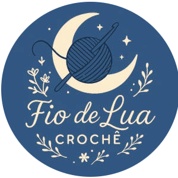

É com muito carinho que apresento a Fio de Lua Crochê, uma marca que nasce do encontro entre criatividade, delicadeza e o amor pelo feito à mão.
Cada peça é produzida artesanalmente, ponto a ponto, com atenção aos detalhes e inspiração na leveza da lua, na natureza e na beleza das coisas simples. Nosso objetivo é criar mais do que acessórios: queremos entregar significado, aconchego e identidade em cada criação.
Trabalhamos com bolsas e peças em crochê que unem estilo e autenticidade, valorizando o trabalho manual e trazendo um toque único para o dia a dia de quem usa.
A Fio de Lua Crochê acredita que o artesanal carrega:
E é isso que buscamos transmitir em cada produto. Ficaremos muito felizes em compartilhar nosso trabalho com você.
@fiodelua.croche - Siga no instagram
Whatsapp - Faça sua encomenda
Tiktok - Nos siga no Tiktok
Email - Nosso Email para contato